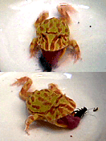
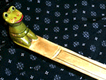

|
 カエルのベル子はべろっと食事！【日本発=55froggy同志記者】うちのベルツノガエルのベル子のお食事風景をＤＶカメラでキャッチしました。デジカメでは撮れなかったんです。いつもはじ〜〜〜っとしているのに、どうしてこんなに素早いんだろうと思います。しかし、すごい姿です。 うちのホームページにはムービーになっています。よかったらのぞいてください。 【全国かえる奉賛会】ふだんは、のそのそしていても、食事の時には、がばああっとでかい口を開けて、ベロもベロロロローッツと出して丸飲みするのがカエルの食事だ。昆虫に生まれてカエル様に出くわしたら、逃げるしかないなーっ！それにしても豪快な食事風景である。
 走るカエルさんがカエル島のバリ島を旅行！【蘭印バリ島発=走るカエル同志記者】先週、温存しておいた夏休みをいっきに使い、憧れのバリ島へ行ってきました。バリにもやっぱりかえるがいっぱい！！おなじみの木彫りのかえるをはじめ、かえるのお香立てや灰皿、塩・胡椒いれなどの食器類、カエラーを魅惑してしまう素敵な品々。拙い英語でなんとか会話をすると、バリニーズ（バリ人）にとってかえるはラッキーアニマルであることが判明。たくさんの人を幸せにするなんて、かえるってなんて素晴らしい生き物なんでしょうぅ〜〜〜〜〜〜（涙）
【全国かえる奉賛会】インドネシアのバリ島製のカエルがちまたにあふれているが、本場ででくわしたカエルグッズは、さらに素晴らしい。カエラーなら憧れるカエル島だよねーっ。大王はまだ行ったことがないので、一度はいってみたいぞーっ

残りはカエルサボテンストラップ１個！【けろテン市場】カエルサボテンの第３期発売は９月１日に発売。今回もカエルサボテン２つは即日完売した。
残りは携帯ストラップ１個とポストカード４枚組みが発売しています。けろテン市場にイマスグ行こう。 安全運転で無事カエル！【山形発ひなひな同志記者】山形の自動車教習所のページなのですが、「安全運転で無事カエル」ということからマスコットキャラにかえるを採用していますっ。知っていればここで教習受けたかったですっ。
【全国かえる奉賛会】まったくだー。ここで取得した免許は、カエル公安委員会発行のものだと、もっといいぞーっ。
京の路地裏職人がカエルキャラ！【京都発鈴木松風堂「京の路地裏職人」同志記者】（株）鈴木松風堂「京の路地裏職人」と申します。 弊社は、京都でカエルをあしらった紙製品を販売しています。今までお買い上げいただいたお客様からも多数、喜びの声をいただいております。
京の路地裏職人の紙製品はとてもユニークなものばかり。再生紙などリサイクル製品が多いので、環境に優しいのも特徴です。そして、自然素材を活かしているので、自然だけではなくて、人にも優しいんです。 雨の日はカエルポイント２倍！【東京発吉祥寺のCave同志記者】吉祥寺のCaveと申します。 お客様よりこちらの新聞平成12年7月10日号に掲載されていたと教えていただきました。こんなにカエル好きの人が集う新聞に載せていただけるとは！光栄です。メンバーズカードですが（若干訂正があります）1000円（税込）で1ポイント（もちろんスタンプはかえる型です）雨の日はケロケロッとポイント2倍になります。いっぱいになると嬉しい＆ちょっといいことがあります。 Caveは吉祥寺のかえるやを目指しております。リアルなカエルから可愛い、おマヌケけ、驚愕の、そしてアンティークなかえるまでとことん突き詰めてみようと思っていますので（笑）、お近くまでお越しの際はちょっと覗いて見て下さい。
投稿採用者に武功カエル徽章を授与！ |
かえる古新聞過去に取り上げた記事を見出し付きで一覧したい人は、ここをクリック◆創刊号を見る◆先週号を見る◆話題の号を見る◆かえる新聞の昔を読む
|
私も入っています。。全国かえる奉賛会
大王様に会うには、このバナーをクリック。ずっと奥に写真館があるぞ。全国かえる奉賛会に入会するには、自分のホームページのどこかに、下の部分を追加するとバナーがリンク付きで表示されるぞ。どんどん入会しましょー |


|